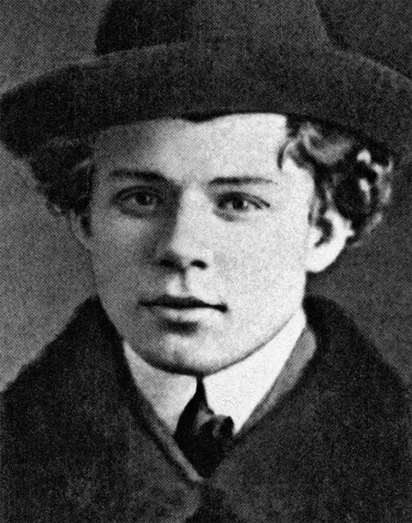
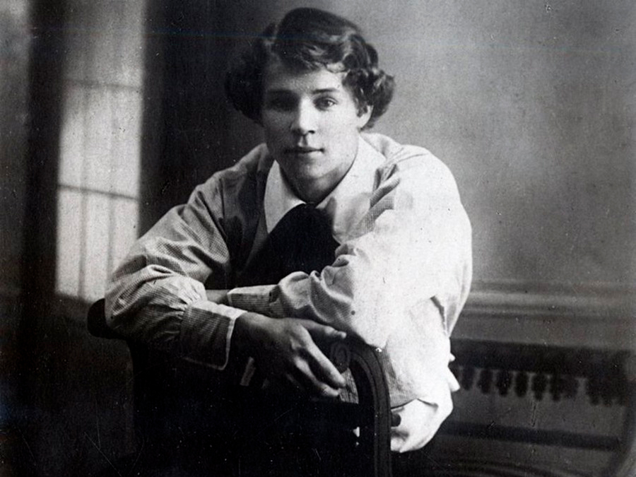
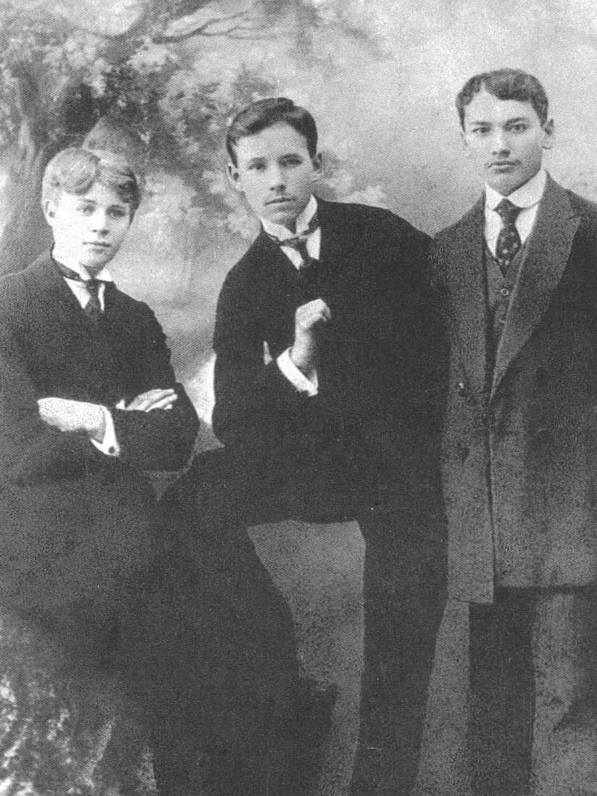

Сергей Есенин родился 3 октября 1895 года в селе Константинове Рязанской губернии.
Жизнь в русской глубинке с раннего детства вдохновляла мальчика, и уже в девять лет он написал свои первые стихи.
Начальное образование Сергей Есенин получил в земской школе — будущий поэт закончил ее с отличием.
Однако, как он позже вспоминал, учеба никак не отразилась на его становлении и не оставила ничего,
«кроме крепкого знания церковнославянского языка». Когда мальчику исполнилось 14 лет,
его отдали в Спас-Клепиковскую учительскую школу: родители хотели, чтобы сын стал сельским учителем.
Но Есенин свое призвание видел в поэзии, поэтому в школе продолжал писать стихотворения.
Он даже пытался издать в Рязани свой сборник «Больные думы», но книгу не напечатали.
После окончания школы, летом 1912 года, Сергей Есенин приехал в Москву:
осенью он должен был поступать в Московский учительский институт.
Но наперекор решению родителей устроился в книгоиздательство «Культура» и отказался учиться.

«Теперь решено. Я один. Жить теперь буду без посторонней помощи. <...> Эх, теперь, вероятно,
ничего мне не видать родного. Ну что ж! Я отвоевал свою свободу», — писал он другу Григорию Панфилову.
Есенин присылал свои стихи в московские журналы, но их не публиковали.
В одном из писем Панфилову поэт признавался: «Особенно душило меня безденежье,
но я все-таки твердо вынес удар роковой судьбы, ни к кому не обращался и ни перед кем не заискивал».
Чтобы иметь средства к существованию, молодой поэт подрабатывал продавцом в книжном магазине.

В 1913 году он стал вольнослушателем историко-философского цикла в Московском городском
народном университете имени Альфонса Шанявского. Занятия проходили по вечерам, поэтому Есенин легко
совмещал их с дневной работой. В это время он служил в типографии Товарищества Ивана Сытина.
Сначала работал экспедитором, затем — помощником корректора.
В этот период Есенин увлекся идеями социал-демократической партии. Поэт распространял политические листовки,
выступал перед рабочими в заводских районах и агитировал их бороться за свои права.
23 сентября 1913 года Есенин участвовал в общемосковской забастовке против гонений на пролетарскую печать.
О происходящем поэт сообщал Панфилову: «Там возле тебя мирно и плавно текут, чередуясь,
блаженные дни, а здесь кипит, бурлит и сверлит холодное время, подхватывая на своем течении
всякие зародыши правды, стискивает в свои ледяные объятия и несет бог весть куда в далекие края,
откуда никто не приходит».
Аресты демонстрантов, полицейские репрессии, гонения на рабочую печать —
все это юный поэт остро переживал и отражал в своих стихотворениях.
К тому времени у Есенина собралась книга стихов «Радуница».
Некоторые сочинения из сборника он отправил в петербургские журналы,
но ни одного ответа так и не получил. Зато московские издания стали печатать поэта:
детский журнал «Мирок» опубликовал стихотворения «Береза», «Воробышки», «Пороша», «Село»,
«Пасхальный благовест», а большевистская газета «Путь правды» напечатала стихотворение «Кузнец».